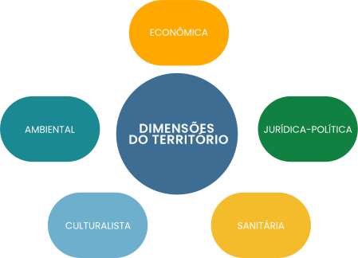

TÓPICO 1
TERRITÓRIO: USOS E APLICAÇÕES NO CAMPO DA SAÚDE
A partir desse conceito, e em convergência com as reflexões de Gondim e Monken (2017), podemos estabelecer cinco dimensões do território.
Clique sobre cada uma delas para conhecê-las.
